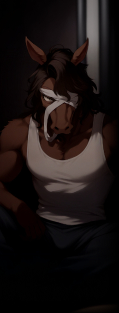

ラグナロク以前から存在し、エクシード差別撤廃の運動を武力闘争で行う過激団体。
キーワードは【差別解放】【革命】。
キーワードは【差別解放】【革命】。
元々は、ヤフヤを中心としてエクシードの差別撤廃を訴える平和的な政治団体だった。
ヤフヤの投獄後、エクシード差別に対抗すべく武力闘争を行うテロ団体へと変遷している。
ヤフヤの投獄後、エクシード差別に対抗すべく武力闘争を行うテロ団体へと変遷している。
特に異能主義を掲げた【テセウス】のラグナロク敗北、【グングニル】への服従宣言は彼らに大きな衝撃を与え、
これを契機にオルレアン・テセウスとは完全に袂を分かっている。
これを契機にオルレアン・テセウスとは完全に袂を分かっている。
その性質上、参加者の大半はエクシードだが、中でも外見の変化から最も差別を受けやすいトランサーが大部分を占める。
中下層へ落とされたエクシードやその関係者など、上層のノーマル主義下で不当に扱われた者たちも多い。
グングニル下に組み込まれたオルレアンやテセウスの離反者も多く受け入れる一方で、
その逆、つまり活動の先鋭化についていけなくなった者がオルレアン等へ鞍替えするといった現象も起こっている。
中下層へ落とされたエクシードやその関係者など、上層のノーマル主義下で不当に扱われた者たちも多い。
グングニル下に組み込まれたオルレアンやテセウスの離反者も多く受け入れる一方で、
その逆、つまり活動の先鋭化についていけなくなった者がオルレアン等へ鞍替えするといった現象も起こっている。
主な活動内容は現状のノーマル体制と特区エデンの解体を目標としたテロ・ゲリラ。
代表者【ヤフヤ】はグングニルにより投獄されており、彼の解放も当面の目標の一つである。
代表者不在の元、規模だけは拡大し組織の収拾がついていない事や、
一斉摘発を回避するためにそれぞれで潜伏している事などにより、具体的な規模は不明。
監視の厳しい上層やエクシード差別の少ない下層には少なく、中層を活動の拠点とする。
代表者【ヤフヤ】はグングニルにより投獄されており、彼の解放も当面の目標の一つである。
代表者不在の元、規模だけは拡大し組織の収拾がついていない事や、
一斉摘発を回避するためにそれぞれで潜伏している事などにより、具体的な規模は不明。
監視の厳しい上層やエクシード差別の少ない下層には少なく、中層を活動の拠点とする。
シェアワールド原文
ラグナロク以前から存在し、能力者差別撤廃の運動を武力闘争で行う過激団体。キーワードは【差別解放】【革命】
民主機構オルレアン、抑制機構テセウスとは思想の違いにより袂を分かっている。
元々は能力者差別、特に見た目の変化から最も差別されるトランス能力者を主軸に形成された武力行使などはしなかった団体を前進にしているが、
ラグナロク以後、グングニル、ルーン企業連などのノーマルを主に置いた組織がユグドラシルを制御している現状は
ラグナロク以前よりもノーマルと能力者の摩擦が増えており、能力者革命を掲げたテセウスの敗北もあり、武力による過激な革命をする団体へ至った。
現グングニル体制の解体と特区エデンの解体、投獄されている【代表者：ヤフヤ】の解放を軸にゲリラ活動やテロ活動など武力によった革命運動を続けている。
民主機構オルレアン、抑制機構テセウスとは思想の違いにより袂を分かっている。
元々は能力者差別、特に見た目の変化から最も差別されるトランス能力者を主軸に形成された武力行使などはしなかった団体を前進にしているが、
ラグナロク以後、グングニル、ルーン企業連などのノーマルを主に置いた組織がユグドラシルを制御している現状は
ラグナロク以前よりもノーマルと能力者の摩擦が増えており、能力者革命を掲げたテセウスの敗北もあり、武力による過激な革命をする団体へ至った。
現グングニル体制の解体と特区エデンの解体、投獄されている【代表者：ヤフヤ】の解放を軸にゲリラ活動やテロ活動など武力によった革命運動を続けている。
主な参加者は以前から差別対象であったトランス能力者、非差別能力者であるが
上層のノーマル主義の下、中層や下層へ落とされた能力者やその関係者など不当に扱われた能力者も多く参加している。
グングニル下に組み込まれたオルレアンやテセウスの離反者も多く受け入れている。
逆に過激な活動に賛同できなくなった者はオルレアンなどに鞍替えもしている。
上層のノーマル主義の下、中層や下層へ落とされた能力者やその関係者など不当に扱われた能力者も多く参加している。
グングニル下に組み込まれたオルレアンやテセウスの離反者も多く受け入れている。
逆に過激な活動に賛同できなくなった者はオルレアンなどに鞍替えもしている。
代表者は【ヤフヤ】と呼ばれる馬のトランサーであるが、グングニルにより投獄されている。
代表者不在の元、規模だけは拡大し組織の収拾がついていない事や、
一斉摘発を回避するためにそれぞれで潜伏している事などにより、具体的な規模は不明である。
監視の厳しい上層や能力者差別の少ない下層にはおらず、中層に多く存在する。
代表者不在の元、規模だけは拡大し組織の収拾がついていない事や、
一斉摘発を回避するためにそれぞれで潜伏している事などにより、具体的な規模は不明である。
監視の厳しい上層や能力者差別の少ない下層にはおらず、中層に多く存在する。

- 男性
- ５１歳
- 能力タイプ
- トランサー
- 能力名
- 壮獣ビースター
- 一人称
- 僕、私
- 二人称
- 君、○○くん
- 三人称
- ？？？
- ベース
- 穏やか、淡泊、理知的
-
その他
口癖等 -
能力者解放戦線の現代表を務める、ウマのミュータント。
異能【壮獣ビースター】は肉体をウマに変容させるトランサー。異能の副作用で視野が過剰に広くなってしまい、普段は目隠しをしている。
異能【壮獣ビースター】は肉体をウマに変容させるトランサー。異能の副作用で視野が過剰に広くなってしまい、普段は目隠しをしている。
上層の某・公会堂を占拠し、市民やＹＤＦに向けてクーデターを呼びかけるテロ事件を起こしたことで、現在は投獄中。
世間的には優れた文筆家としても知られ、小説から批評文に至るまで多彩な著作を持ち、投獄以前から名の知れた知識人であった。
そのため一般社会にとって彼の逮捕は、「有名作家が政治的テロに走った」という衝撃として受け止められた。
世間的には優れた文筆家としても知られ、小説から批評文に至るまで多彩な著作を持ち、投獄以前から名の知れた知識人であった。
そのため一般社会にとって彼の逮捕は、「有名作家が政治的テロに走った」という衝撃として受け止められた。
「我々は、ただ生き延びるためにここにいるのではない。誇りを持って存在するために、立ち上がるのだ」
「僕たちには神話が必要だ。他の何者にも依らない、このユグドラシルという土地だけに息吹く神話が」
「僕たちには神話が必要だ。他の何者にも依らない、このユグドラシルという土地だけに息吹く神話が」
思想について
収監以前から今現在に至るまで広く誤解されているが、彼の目的は単なる【差別撤廃】ではない。
彼が本質的に問題視していたのは、外界から追放された者たちが集まったユグドラシルという土地が、
なおも外界の価値観――ノーマル中心主義や文化的規範――を模倣し続けていることだった。
彼が本質的に問題視していたのは、外界から追放された者たちが集まったユグドラシルという土地が、
なおも外界の価値観――ノーマル中心主義や文化的規範――を模倣し続けていることだった。
彼は「能力者」という属性を、単なる異能の有無ではなく、
ユグドラシルに流れ着いたすべての被差別者・棄民を包括する概念として捉え直すべきだと考えた。
「能力者」であることを文化的・民族的アイデンティティに昇華することで、
彼らが自らの歴史を肯定し、一つの民族として団結すること――それこそがヤフヤの目指す「解放」であり、「革命」であった。
ユグドラシルに流れ着いたすべての被差別者・棄民を包括する概念として捉え直すべきだと考えた。
「能力者」であることを文化的・民族的アイデンティティに昇華することで、
彼らが自らの歴史を肯定し、一つの民族として団結すること――それこそがヤフヤの目指す「解放」であり、「革命」であった。
しかしその理想は、大衆には難解に過ぎた。
ヤフヤの投獄後の能力者解放戦線には、彼が唱えた「自治」も「文化」も理解できず、「差別が辛いから戦う」という私怨と怒りの集積場に成り下がっていった。
皮肉にもヤフヤの名自体は組織の中で象徴化・神聖化され、今や彼の築こうとした文化の幻影だけが独り歩きしている。
ヤフヤの投獄後の能力者解放戦線には、彼が唱えた「自治」も「文化」も理解できず、「差別が辛いから戦う」という私怨と怒りの集積場に成り下がっていった。
皮肉にもヤフヤの名自体は組織の中で象徴化・神聖化され、今や彼の築こうとした文化の幻影だけが独り歩きしている。
シェアワールド原文
【 タイトル 】ヤフヤ
【 分類 】人物
【 条件 】グングニルに投獄中
【 説明 】
男、51歳
能力……【壮獣ビースター】(トランサー)
馬へのトランス能力
能力者解放戦線の現代表、常に馬人の状態であり、人間体へは戻る事ができない。
広すぎる視野から平素は目隠しをされている。
能力者主義者であり、現在の武力による闘争を推し進めた人物。
ラグナロク以後の活動でグングニルに確保され、現在投獄の身である。
しかし、彼の投獄により、彼は神格化され、能力者解放戦線の活動や思想はさらに活発になった。
【 分類 】人物
【 条件 】グングニルに投獄中
【 説明 】
男、51歳
能力……【壮獣ビースター】(トランサー)
馬へのトランス能力
能力者解放戦線の現代表、常に馬人の状態であり、人間体へは戻る事ができない。
広すぎる視野から平素は目隠しをされている。
能力者主義者であり、現在の武力による闘争を推し進めた人物。
ラグナロク以後の活動でグングニルに確保され、現在投獄の身である。
しかし、彼の投獄により、彼は神格化され、能力者解放戦線の活動や思想はさらに活発になった。